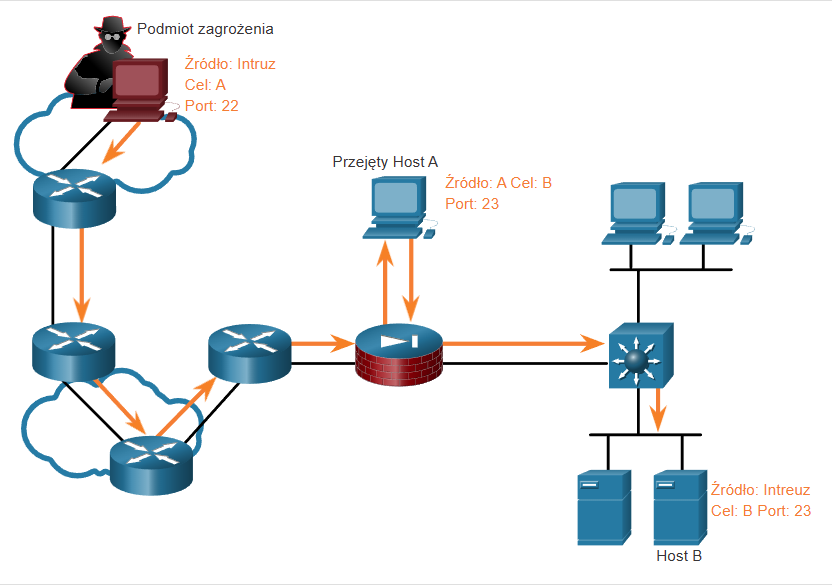
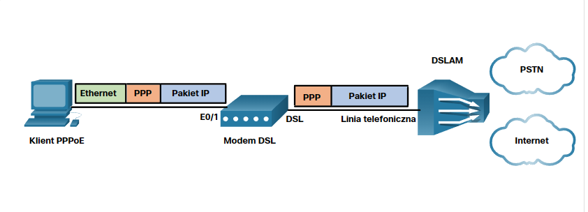
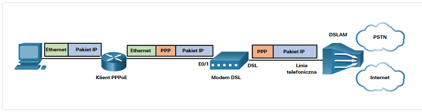

OSPF to protok贸 routingu stanu cza opracowany jako alternatywa dla RIP. Wykorzystuje on koncepcje obszar贸w.
Komunikaty OSPF s wykorzystywane do tworzenia i utrzymywanie trzech nastpujcych baz danych OSPF:
Router używajcy OSPF buduje tablic topologii przy użyciu oblicze opartych na algorytmie Dijkstry pierwszej najkr贸tszej cieżki (shortest-path first - SPF).
W tym celu algorytm SPF tworzy tzw. drzewo SPF, każdy router umieszczany jest w korzeniu drzewa, po czym obliczana jest najkr贸tsza cieżka do każdego wza. Nastpnie na podstawie utworzonego drzewa SPF obliczana jest najlepsza cieżka. Ostatecznie OSPF wstawia najlepsze cieżki do tablicy przekazywania, na podstawie kt贸rej tworzona jest tablica routingu.
To odpowiednik OSPFv2 sużacy do wymiany prefiks贸w IPv6.

DR - Designed Router; BDR - Backup Designed Router

To warto 32-bitowa, kt贸ra suży do jednoznacznej identyfikacji routera. Identyfikator ten suży do wykonywania nastpujcych czynnoci:

To odwrotno maski podsieci. (255.255.255.0 = 0.0.0.255).
Domylnie komunikaty OSPF wysyane s przez wszystkie interfejsy doczone do protokou OSPF. Jednak w praktyce powinny one by wysyane tylko na tych interfejsach, na kt贸rych jest poczenie z innym routerami z uruchomionym OSPF.
Wysyanie niepotrzebnych komunikat贸w może wpywa na dziaanie sieci na trzy sposoby:
Routery, kt贸re nie s ani DR ani BDR.
Protokoy routingu używaj metryki w celu wyznaczenia najlepszej trasy dla pakietu przez sie. Metryka jest miar nakadu wymaganego do przesania pakietu przez dany interfejs.
Protok贸 OSPF używa jako metryki kosztu cieżki. Im niższy koszt, tym lepsza trasa do celu.
Koszt = referencyjna szeroko pasma / szeroko pasma interfejsu
Warto kosztu OSPF musi by liczb cakowit.

Pakiety OSPFv2 Hello s wysyane co 10 sekund.
Interwa Dead to okres, przez jaki router bdzie czeka na odbi贸r pakietu Hello, zanim zadeklaruje, że ssiad jest wyczony. (W Cisco domylnie jest to 4-krotno interwau Hello, czyli 10 sek).
Router brzegowy (router bramy) - to router podczony do Internetu, kt贸ry powinien propagowa domyln tras do innych router贸w w lokalnej sieci.
Router brzegowy systemu autonomicznego (Autonomous System Boundary Router, ASBR) - router, kt贸ry znajduj si pomidzy domen routingu OSPF a sieci bez OSPF.

Wekor ataku - to cieżka, dziki kt贸rej podmiot zagrożenia może uzyska dostp do serwera, hosta lub sieci. Wektory mog pochodzi ze zewntrz lub wewnrz.


Rozprzestrzeniania si i infekuje inne komputery po wykonaniu przez użytkownika okrelonego dziaania.
Program, kt贸ry wyglda na przydatny, ale zawiera zoliwy kod.
To zbieranie informacji. Podmioty zagrożenia wykorzystuj ataki rozpoznawcze do nieautoryzowanego wykrywania i mapowania system贸w, usug lub podatnoci. Ataki rozpoznawcze poprzedzaj ataki dostpu lub ataki DoS.

Celem tego typu ataku jest uzyskanie dostpu do dkont internetowych, poufnych baz danych i innych poufnych informacji.
Pr贸ba odkrycia krytycznego hasa systemowego przy użyciu różnych moetd.
Pr贸ba pozowania jako inne urzdzenie poprzez faszowanie danych tj. adres IP, adres MAC czy faszowanie DHCP.
Polega na korzystaniu z nieautoryzowanych uprawnie w celu uzyskania dostpu do systemu, co może zagrozi celowi.
Podmiot zagrożenia używa zagrożonego systemu jako bazy atak贸w na inne cele. 
Podmiot zagrożenia umieszczony jest pomidzy dwoma uprawnionymi podmiotami w celu odczytania lub modyfikowania danych przekazywanych midzy dwoma stronami. 
Aktor zagrożenia wykorzystuje pami bufora i przytacza j nieoczekiwanymi wartociami. Zwykle powoduje to, że system nie dziaa, tworzc atak DoS.
Socjotechnika jest atakiem polegajcym na pr贸bie nakonienia ludzi do wykonania okrelonych dziaa lub ujawnienia poufnych informacji.

Atak odmowy usug (Denial of Service) powoduje przerwanie wiadczenia usug sieciowych.
Rozproszony atak DoS (Distributed DoS, DDoS) - podobny do DoS, lecz pochodzi z wielu skoordynowanych ze sob urzdze.

Aktorzy zagroże wykorzystuj ICMP do atak贸w rozpoznawczych i skanowania oraz atak贸w DoS.
Technika ta nazywana jest atakiem smurfowym i jest wykorzystywana do przytaczania docelowego hosta.

Podmiot zagrożenie tworzy pakiety z faszywymi 藕r贸dowymi informacjami adresowymi IP, aby ukry tożsamo nadawcy lub pozowa innego uprawnionego użytkownika.
Ataki faszowania mog by nielepe lub lepe:

Atak TCP SYN Flood 
Atak TCP RESET- suży do przerwania komunikacji TCP midzy dwoma hostami.

Może by używane do uruchamiania różnych atak贸w man-in-the-middle. Wysyajc faszywe gratisowe odpowiedzi ARP zawierajce sw贸j adres MAC dla wskazanych adres贸w IP docelowych zmienia on pami podrczn ARP urzdze i stawia si midzy ofiar, a wszystkimi innymi systemami w sieci.
Haker umieszcza ruch inny niż DNS w ruchu DNS. Metoda ta czsto omija rozwizania zabezpieczajce, gdy podmiot zagrożenia chce komunikowa si z botami wewntrz chronionej sieci lub wyeksportowa dane z organizacji.
Zapora jest systemem lub grup system贸w, kt贸ra wymusza polityk kontroli dostpu midzy sieciami.
IDS - Intrusion Detection System IPS - Intrusion Prevension System
Wykrywaj one wzorce ruchu sieciowego za pomoc sygnatur. Sygnatura to zestaw regu używanych do wykrywania zoliwej aktywnoci.
Cisco Email Security Appliance (ESA) przeznaczone do monitorowania Simple Mail Transfer Protocol (SMTP).
Cisco Web Security Appliance (WSA) to technologia ograniczania zagroże internetowych.
Funkcje skr贸tu s wykorzystywane w celu zapewnienia integralnoci wiadomoci. Gwarantuj one, że dane wiadomoci nie ulegy zmianie przypadkowo lub celowo.
Funkcje skr贸tu (mieszanie) s podatne na MITM i niez apewnia bezpieczestwa przesyanych danych.
Aby doda uwierzytelnianie do zapewnienia integralnoci można uży kodu uwierzytelniania wiadomoci z kluczem skr贸tu (HMAC). HMAC wykorzystuje dodatkowy klucz tajny jako wejcie dla funkcji skr贸tu.
Do zapewnienia poufnoci danych używane s dwie klasy szyfrowania: symetryczne i asymetryczne.


Szyfr strumieniowy szyfruje jeden bajt lub jeden bit na raz.
Algorytmy asymetryczne używaj klucza publicznego i klucza prywatnego.
Przykady protoko贸w wykorzystujcych szyfrowanie asymtryczne:

Asymetryczny algorytm matemyczny, w kt贸rym dwa PC generuj identyczny klucz tajny bez komunikowania si ze sob.
DH jest używany w:
Lista kontroli dostpu to seria polece IOS używanych do filtrowania pakiet贸w na podstawie informacji w nag贸wku. Lista ACL używa sekwencyjnyej listy instrukcji zezwalania lub odmowy, zwanych wpisami kontroli dostpu (ACE; czsto r贸wnież nazywanych reguami ACL).
Proces, w kt贸rych router por贸wnuje informacje zawarte w pakiecie ze wpisami ACE.

Wejciowa lista ACL - filtruje pakiety, zanim zostan skierowane do interfejsu wychodzcego. Jeli pakiet jest dopuszczony przez list ACL, jest nastpnie przekazywany do routingu. Najlepiej si sprawdza kiedy sie doczona do interfejsu wejciowego jest jedynym 藕r贸dem pakiet贸w, kt贸re maj by filtrowane.
Wyjciowa lista ACL - filtruje pakiety wychodzce, po przetworzeniu ich w procesiue routingu, niezależnie od użytego interfejsu wejciowego. Takie podejcie jest najbardziej użyteczne w sytuacji, gdy te same reguy filtrowania maj by zastosowane do pakiet贸w przychodzcych z wielu interfejs贸w wejciowych, zanim opuszcz interfejs wyjciowy.
Jeli ACL nie zaiwera instrukcji zezwolenia, domylnie odmawia si caego ruchu.
Niejawny wpis deny any odrzuca kazdy pakiet, kt贸ry nie pasuje do żadnego poprzedniego wpisu ACE.
Wpis ACE dla IPv4 używa 32-bitowej maski blankietowej, aby okreli, kt贸re bity adresu maj zosta zbadane pod ktem dopasowania. Maski blankietowe s r贸wnież używane przez protok贸 Open Shortest Path First (OSPF).


Aby uproci korzystanie z masek blankietowych Cisco IOS udostpnia dwa sowa kluczowe:
Konkretny interfejs routera może mie:
Najbardziej szczeg贸owe instrukcje ACL należy wprowadzi jako pierwsze ze wzgldu na odg贸rny, sekwencyjny charakter list ACL.
Listy ACL o numerach od 1 do 99 lub od 1300 do 1999 to standardowe listy ACL, podczas gdy listy ACL o numerach od 100 do 199 lub od 2000 do 2699 to rozszerzone listy ACL.
Nazwane ACL s preferowan metod użycia podczas konfigurowania ACL.
Poniżej przedstawiono podsumowanie zasad, kt贸re należy przestrzega dla nazwanych ACL: - Przypisz nazw w celu identyfikowania listy ACL. - Nazwy mog zawiera znaki alfanumeryczne. - Nazwy nie mog zawiera spacji ani znak贸w interpunkcyjnych. - Sugeruje si, aby nazw pisa WIELKIMI LITERAMI. - Wewntrz listy ACL wpisy mog by dodawane lub usuwane.
Rozszerzone listy ACL powinny znajdowa si jak najbliżej 藕r贸da ruchu, kt贸ry ma by filtrowany.
Standardowe ACL powinny znajdowa si jak najbliżej miejsca docelowego.
Router(config)# access-list access-list-number {deny | permit | remark text} source [source-wildcard] [log]Router(config)# ip access-list standard access-list-nameRouter(config-if) # ip access-group {access-list-number | access-list-name} {in | out}Komenda wywoana w trybie konfiguracji interfejsu.


Polecenie show access-lists wywietla liczbdopasowa dla poszczeg贸lnych wpis贸w.
Polecenie clear access-list counters czyci statystyki ACL.
R1(config-line)# access-class {access-list-number | access-list-name} { in | out } Polecenie access-class stosujemy podczas konfigurowania linii vty.
Sowo kluczowe in jest najczciej używan opcj filtrowania przychodzcego ruchu vty. Parametr out filtruje wychodzcy ruch vty i jest rzadko stosowany.

Router(config)# access-list access-list-number {deny | permit | remark text} protocol source source-wildcard [operator {port}] destination destination-wildcard [operator {port}] [established] [log]
Sowo kluczowe establish umożliwia wychodzenie ruchowi z wewntrznej sieci prywatnej i pozwala powracajcemu ruchowi odpowiedzi na wejcie do wewntrznej sieci prywatnej.
Router(config)# ip access-list extended access-list-name 
G贸wnym zastosowaniem NAT jest oszczdzanie publicznych adres贸w IPv4 poprzez transalcj adres贸w prywatnych na publiczne. Dodatkowo NAT zwiksza prywatno i bezpieczestwo sieci, ponieważ ukrywa wewntrzne adresy IPv4 przez siecami zewntrznymi.
Jeden lub wicej publicznych adres贸w IPv4, kt贸rych router z NAT używa do tumaczenia.
Sie lub sieci z pojedynczym poczeniem z sieci ssiedzk, jedn drog do i jedn drog z sieci. I to wanie w tych sieciach najczciej dziaa router NAT.
Sie wewntrzna to zestaw sieci podlegajcych translacji. Sie zewntrzna obejmuje wszystkie pozostae sieci.
Statyczna translacja NAT umożliwia utworzenie odwzorowania typu jeden-do-jednego pomidzy lokalnymi i globalnymi adresami. Te odwzorowania s konfigurowane przez administratora sieci i pozostaj niezmienne. Szczeg贸lnie przydatny w serwerach WWW albo urzdzeniach, kt贸re musz mie niezmienny adres.
Dynamiczny NAT przyznaje adresy publiczne obsugujc żdania w kolejnoci zgoszenia. Kiedy urzdzenie wewntrzne zażda dostpu do sieci zewntrznej, dynamiczny NAT przypisuje dostpny adres IPv4 z puli.
Translacja adres贸w port贸w (PAT), znana także jako przeciżenie NAT, powoduje przeksztacenie wielu prywatnych adres贸w IPv4 na pojedynczy lub klika publicznych adres贸w IPv4. To wanie robi wikszo router贸w domowych. Dostawca usug internetowych przypisuje routerowi jeden adres, ale kilku domownik贸w może jednoczenie uzyska dostp do Internetu. Jest to najczstsza forma NAT zar贸wno dla domu, jak i przedsibiorstwa.
PAT identyfikuje adres prywatny za pomoc numeru portu.
Jeżeli numer porty wybrany przez hosta jest już skojarzony z innymi aktywnymi sesjami to PAT przypisuje pierwszy dostpny numer portu zaczynajc od pocztku odpowiedniej grupy port贸w 0-511, 512-1 023 lub 1024-65 535. Kiedy zabraknie dostpnych port贸w, ale jest dostpny wicej niż jeden adres zewntrzny w puli, mechanizm PAT przechodzi do nastpnego adresu IP.

W przypadku pakietu, kt贸ry nie zawiera numeru portu warstwy 4. tj. jak (ICMPv4) PAT obsuguje je w inny spos贸b dla każdego protokou. W komunikatach ICMP wystepuje np. Query ID (identyfikator zapytania), kt贸ry powizuje zapytanie z odpowiedzi na nie.

R2(config)# ip nat inside source static wewntrzny_adres_lokalny wewnrzny_adres_globalnyPolecenie to tworzy odwzorowanie midzy wewntrznym adresem lokalnym (np. 192.168.10.254), a wewntrznym adresem globalnym (np. 209.165.201.0). Jest to polecenie trybu konfiguracji globalnej.
R2(config-if)# ip nat [inside | outside]Polecenie to przypisuje dany interfejs do translacji NAT. Z tego polecenie korzystamy w trybie konfiguracji szczeg贸owej danego interfesju.
R2# show ip nat translations
Pro Inside global Inside local Outside local Outside global
tcp 209.165.201.5 192.168.10.254 209.165.200.254 209.165.200.254
--- 209.165.201.5 192.168.10.254 --- ---
Total number of translations: 2Polecenie show ip nat translations pokazuje aktywne translacje NAT.
R2# show ip nat statistics
Total active translations: 1 (1 static, 0 dynamic; 0 extended)
Outside interfaces:
Serial0/1/1
Inside interfaces:
Serial0/1/0
Hits: 0 Misses: 0
(output omitted)Polecenie show ip nat statistics wywietla informacje o cakowitej liczbie aktywnych tumacze, parametrach konfiguracyjnych NAT, liczbie adres贸w w puli oraz liczbie przydzielonych adres贸w.
R2# clear ip nat statisticsAby zweryfikowa translacje najlepiej wyczyci statystyki poprzednich translacji za pomoc polecenia clear ip nat statistics.
R2(config)# ip nat pool NAT-POOL1 209.165.200.226 209.165.200.240 netmask 255.255.255.224Polecenie to tworzy pula adres贸w publicznych wykorzystaywantch do translacji.
R2(config)# access-list 1 permit 192.168.0.0 0.0.255.255Konfiguruje standardow liste ACL zawierajc tylko adresy, kt贸re maj by poddawane translacji.
R2(config-if)# ip nat inside source list 1 pool NAT-POOL1Powizuje liste ACL z pul.
R2(config-if)# ip nat inside
Okrela interfejsy wewntrzne, zewntrzne w odniesieniu do NAT.
R2# show ip nat translations
Pro Inside global Inside local Outside local Outside global
--- 209.165.200.228 192.168.10.10 --- ---
--- 209.165.200.229 192.168.11.10 --- ---
R2#Wywietla wszystkie skonfigurowane zamiany adres贸w.
R2# show ip nat translation verbose
Pro Inside global Inside local Outside local Outside global
tcp 209.165.200.228 192.168.10.10 --- ---
create 00:02:11, use 00:02:11 timeout:86400000, left 23:57:48, Map-Id(In): 1,
flags:
none, use_count: 0, entry-id: 10, lc_entries: 0
tcp 209.165.200.229 192.168.11.10 --- ---
create 00:02:10, use 00:02:10 timeout:86400000, left 23:57:49, Map-Id(In): 1,
flags:
none, use_count: 0, entry-id: 12, lc_entries: 0
R2#Dodanie do polecenia opcji verbose powoduje wywietlenie dodatkowych informacji o każdym wpisie w tablicy translacji.
#R2(config)# ip nat translation timeout timeout-secondsDomylnie wpisy translacji wygasaj po 24 godzinach, za pomoc tego polecenia możemy ustawi ten czas na inny.
R2# clear ip nat translation *
R2# show ip nat translationCzyszczenie wpis贸w dynamicznych przed upywem limitu czasu.

R2# show ip nat statistics
Total active translations: 4 (0 static, 4 dynamic; 0 extended)
Peak translations: 4, occurred 00:31:43 ago
Outside interfaces:
Serial0/1/1
Inside interfaces:
Serial0/1/0
Hits: 47 Misses: 0
CEF Translated packets: 47, CEF Punted packets: 0
Expired translations: 5
Dynamic mappings:
-- Inside Source
[Id: 1] access-list 1 pool NAT-POOL1 refcount 4
pool NAT-POOL1: netmask 255.255.255.224
start 209.165.200.226 end 209.165.200.240
type generic, total addresses 15, allocated 2 (13%), misses 0
(output omitted)
R2#Powoduje wywietlenie informacji o: cakowitej liczbie aktywnych translacji, parametrach konfiguracyjnych NAT, liczbie adres贸w w puli oraz liczbie przydzielonych adres贸w.
R2(config)# ip nat inside source list 1 interface serial 0/1/1 overload
R2(config)# access-list 1 permit 192.168.0.0 0.0.255.255
R2(config)# interface serial0/1/0
R2(config-if)# ip nat inside
R2(config-if)# exit
R2(config)# interface Serial0/1/1
R2(config-if)# ip nat outsideAby skonfigurowa PAT wystarczy do polecenia ip nat inside source doda sowo kluczowe overload. Reszta konfiguracji przebiega podobnie do statycznego lub dynamicznego NAT.
R2(config)# ip nat pool NAT-POOL2 209.165.200.226 209.165.200.240 netmask 255.255.255.224
R2(config)# access-list 1 permit 192.168.0.0 0.0.255.255
R2(config)# ip nat inside source list 1 pool NAT-POOL2 overload
R2(config)#
R2(config)# interface serial0/1/0
R2(config-if)# ip nat inside
R2(config-if)# exit
R2(config)# interface serial0/1/1
R2(config-if)# ip nat outside
R2(config-if)# end
R2#Aby skonfigurowa PAT dla dynamicznej puli adres贸w NAT ponownie wystarczy doda overload do polecenia ip nat inside source.
R2# show ip nat translations Pro Inside global Inside local Outside local Outside global tcp 209.165.200.225:1444 192.168.10.10:1444 209.165.201.1:80 209.165.201.1:80 tcp 209.165.200.225:1445 192.168.11.10:1444 209.165.202.129:80 209.165.202.129:80 R2#
Pokazuje translacje z różnych host贸w do różnych serwer贸w WWW.
R2# show ip nat statistics
Total active translations: 4 (0 static, 2 dynamic; 2 extended)
Peak translations: 2, occurred 00:31:43 ago
Outside interfaces:
Serial0/1/1
Inside interfaces:
Serial0/1/0
Hits: 4 Misses: 0
CEF Translated packets: 47, CEF Punted packets: 0
Expired translations: 0
Dynamic mappings:
-- Inside Source
[Id: 3] access-list 1 pool NAT-POOL2 refcount 2
pool NAT-POOL2: netmask 255.255.255.224
start 209.165.200.225 end 209.165.200.240
type generic, total addresses 15, allocated 1 (6%), misses 0
(output omitted)
R2#Potwierdza, że NAT-POOL2 dokonaa alokacji pojedynczego adresu dla obu translacji. W wyniku zawarta jest informacja o liczbie i typie aktywnych translacji, parametrach konfiguracyjnych NAT, liczbie adres贸w w puli oraz jak wiele z nich zostao przydzielonych.
Ponieważ wiele sieci używa zar贸wno IPv4, jak i IPv6, musi istnie spos贸b na korzystanie z protokou IPv6 z NAT.
IPv6 zosta opracowany, aby wyeliminowa konieczno translacji NAT adres贸w publicznych i prywatnych IPv4. Jednak IPv6 zawiera wasn prywatn przestrze adresow IPv6, unikalne adresy lokalne (ULA).
Adresy ULA IPv6 s podobne do adres贸w prywatnych IPv4 RFC 1918, lecz istniej także istotne różnice. Adresy ULA przeznaczone s wycznie do komunikacji lokalnej w obrbie lokalizacji. Adresy ULA nie maj na celu zapewnienia dodatkowej przestrzeni adresowej IPv6 ani zapewnienia poziomu bezpieczestwa.
IPv6 zapewnia translacja protoko贸w midzy IPv4 i IPv6 znan jako NAT64.
NAT dla IPv6 jest wykorzystywany w cakowicie odmiennym kontekcie niż NAT dla IPv4 i nie jest wykorzystywany do translacji adres贸w prywatynch IPv6 na globalne IPv6.
| Sieci LAN | Sieci WAN |
|---|---|
| Sieci LAN zapewniaj usugi sieciowe na maym obszarze geograficznym (tj., sie domowa, sie biurowa, sie budynku lub sie kampusu). | Sieci WAN wiadcz usugi sieciowe na dużych obszarach geograficznych (tj. w i midzy miastami, krajami i kontynentami). |
| Sieci LAN s używane do czenia komputer贸w lokalnych, urzdze peryferyjnych i innych urzdze. | Sieci WAN suż do czenia użytkownik贸w zdalnych, sieci i lokalizacji. |
| Sie LAN jest wasnoci i zarzdzana przez organizacj lub użytkownika domowego. | Sieci WAN s wasnoci i zarzdzane przez dostawc贸w usug internetowych, telefonicznych, kablowych i satelitarnych. |
| Poza kosztami infrastruktury sieciowej nie ma opaty za korzystanie z sieci LAN. | Usugi WAN oferowane s za dodatkow opat. |
| Sieci LAN zapewniaj duż szeroko pasma dziki przewodowej sieci Ethernet i Wi-Fi . | Dostawcy sieci WAN oferuj od niskich do dużych szerokoci pasma na duże odlegoci za pomoc zożonych sieci fizycznych. |
Jest zazwyczaj dostarczana przez dostawc usug internetowych lub dostawc usug telekomunikacyjnych korzystajcego z Internetu.
To poczenie dedykowane dla jednego klienta. Zapewnia to nastpujce elementy:
Opisuj fizyczn infrastruktur sieciow wykorzystywan przez dane podczas przesyania ze 藕r贸da do miejsca docelowego. Fizyczna topologia WAN stosowana w sieci WAN jest zożona i w przeważajcej czci nieznana użytkownikom.
Topologie WAN s opisane przy użyciu topologii logicznej. Topologie logiczne opisuj wirtualne poczenie midzy 藕r贸dem a miejscem docelowym. Na przykad, poczenie wideokonferencyjne midzy użytkownikiem w Nowym Jorku i Japonii byoby logicznym poczeniem punkt-punkt.
cza typu punkt-punkt czsto obejmuj dedykowane poczenia dzierżawione z korporacyjnego punktu granicznego do sieci dostawcy. Poczenie punkt-punkt obejmuje usug transportow warstwy 2 za porednictwem sieci dostawcy usug. Pakiety wysyane z jednej strony s dostarczane do drugiej strony i odwrotnie. Poczenie punkt-punkt jest przezroczyste dla sieci klienta. Wydaje si, że istnieje bezporednie fizyczne powizanie midzy dwoma punktami kocowymi.

Umożliwia wsp贸użytkowanie pojedynczego interfejsu na routerze centralnym (hub) przez wszystkie routery obwodowe (spoke).

Zapewnia redundancj. Router centralny jest podwojony w lokalizacji a te nadmiarowo podczone do router贸w obwodowych w chmurze WAN.

Wykorzystuje wiele obwod贸w wirtualnych do czenia wszystkich lokalizacji.

czy wiele, ale nie wszystkie lokalizacje.

Umowa o poziomie usug podpisywana midzy organizacj a usugodawc. Przedstawia ona oczekiwane usugi zwizane z niezawodnoci i dostpnoci poczenia. Usugodawca może, ale nie musi, by faktycznym operatorem. Operator posiada i utrzymuje fizyczne poczenie i sprzt midzy dostawc a klientem. Zazwyczaj organizacja wybierze poczenie WAN z jednym operatorem lub dwoma operatorami.
Poczenie z jednym operatorem ma miejsce, gdy organizacja czy si tylko z jednym dostawc usug. Wad tego podejcia jest poczenie operatora i dostawca usug s pojedynczymi punktami awarii.
Poczenie z dwoma operatorami zapewnia nadmiarowo i zwiksza dostpno sieci, jak pokazano na rysunku. Organizacja negocjuje oddzielne umowy SLA z dwoma różnymi dostawcami usug. Organizacja powinna zapewni, że dwaj dostawcy korzystaj z innego operatora. Chociaż droższe w implementacji, drugie poczenie może by używane do nadmiarowoci jako cze zapasowe. Może by r贸wnież stosowany do poprawy wydajnoci sieci i r贸wnoważenia obciżenia ruchu internetowego.

Maa sie > Sie kampusowa > Sie z oddziaami > Sie rozproszona
Nowoczesne standardy sieci WAN s definiowane i zarzdzane przez wiele uznanych organ贸w, w tym:
| Termin sieci WAN | Opis |
|---|---|
| Urzdzenie kocowe (Data Terminal Equipment - DTE) | Jest to urzdzenie, kt贸re czy sieci LAN abonenta z urzdzeniem komunikacyjnym WAN (tj. DCE). Hosty wewntrzne wysyaj sw贸j ruch do urzdzenia DTE. DTE czy si z ptl lokaln przez DCE. Urzdzenie DTE jest zwykle routerem, ale może by hostem lub serwerem. |
| Urzdzenie komunikacyjne (Data Communications Equipment - DCE) | Zwany r贸wnież sprztem koczcym obw贸d danych, jest to urzdzenie wykorzystywane do komunikowania si z dostawc. Urzdzenie DCE zapewniaj możliwo podczenia abonenta do cza komunikacyjnego w chmury WAN. |
| Urzdzenia kocowe użytkownika (Customer Premises Equipment - CPE) | S to urzdzenia DTE i DCE (tj. router, modem, optyczny konwerter) znajduje si na krawdzi przedsibiorstwa. Abonent jest wacicielem wyposażenia CPE lub dzierżawi je od dostawcy usug. |
| Punkt obecnoci (Point-of-Presence - POP) | Jest to punkt, w kt贸rym abonent czy si z usug dostawcy usug. |
| Punkt graniczny (punkt demarkacyjny) | Jest to fizyczna lokalizacja w budynku lub kompleksu, kt贸ry oficjalnie oddziela CPE od sprztu dostawcy usug. Punktem rozgraniczenia jest zazwyczaj skrzynka przyczeniowa okablowania, znajdujca si na terenie abonenta, kt贸ry czy okablowanie CPE do lokalnej ptli. Identyfikuje lokalizacj, w kt贸rej odpowiedzialno za dziaanie sieci zmienia si z abonenta na usugodawc. Kiedy pojawiaj si problemy, konieczne jest ustalenie, czy użytkownik lub dostawca usug jest odpowiedzialny za rozwizywanie problem贸w lub napraw. |
| Ptla lokalna (lub ostatnia mila) | To jest rzeczywisty kabel miedziany lub wiatowodowy, z kt贸rym czy si CPE do CO usugodawcy. |
| Biuro centralne (Central Office - CO) | Jest to lokalny obiekt usugodawcy lub budynek, kt贸ry czy CPE z sieci dostawcy. |
| Sie patna | Obejmuje to dostpowe, dugodystansowe, w peni cyfrowe, wiatowodowe linie komunikacyjne, przeczniki, routery i inne urzdzenia wewntrz sie dostawcy WAN. |
| Sie dostpowa | (Nie pokazano) Sieci dostepowe cz wiele wz贸w dostpu do sieci dostawcy usug. Sieci dostpowe mog rozciga si na gminy, wojew贸dztwa i regiony. Sieci dostpowe s r贸wnież poczone z dostawcami usug internetowych i do sieci szkieletowej. |
| Sie szkieletowa | (Nie pokazano) S to duże sieci o dużej pojemnoci wykorzystywane do czenia sieci dostawcy usug i tworzenia nadmiarowych sieci. Inni usugodawcy mog czy si bezporednio z szkieletem lub przez innego usugodawc. Dostawcy usug sieci szkieletowych s r贸wnież nazywani dostawcami pierwszego poziomu. |
| Urzdzenia sieci WAN | |
|---|---|
| VPN typu lokacja-lokacja | IPsec VPN |
| GRE przez IPsec | |
| Cisco Dynamic Multipoint Virtual Private Network (DMVPN) | |
| Interfejs wirtualnego tunelu IPsec (VTI) | |
| Poczenie VPN IPsec oparte na kliencie | |
| VPN dostpu zdalnego | Poczenie VPN IPsec oparte na kliencie |
| Bezklientowe poczenie SSL | |
Przesya bity sekwencyjnie na jednym kanale. Prawie caa komunikacja sieciowa odbywa si za jej pomoc.
Sie z komutacj czy ustanawia dedykowany obw贸d (lub kana) midzy punktami kocowymi, zanim użytkownicy bd mogli si komunikowa.
Podczas transmisji w sieci z komutacj czy caa komunikacja korzysta z tej samej cieżki. Caa staa pojemno przydzielona do obwodu jest dostpna na czas poczenia, niezależnie od tego, czy s informacje do transmisji, czy nie. Może to prowadzi do nieefektywnoci w użyciu obwodu. Z tego powodu komutacja czy zasadniczo nie nadaje si do przesyania danych.
Dwa najpopularniejsze typy technologii WAN z komutacj czy to publiczna komutowana sie telefoniczna (PSTN) i sie cyfrowa z integracj usug (ISDN).
W przeciwiestwie do komutacji czy, przeczanie pakiet贸w dzieli dane ruchu na pakiety, kt贸re s kierowane w sieci wsp贸użytkowanej. Przeczanie pakiet贸w, nie wymaga zestawienia specjalnego obwodu/poczenia, ponadto pozwalaj kilku urzdzeniom komunikowa si za pomoc tego samego kanau.
Typowe rodzaje technologii WAN z przeczaniem pakiet贸w to Ethernet WAN (Metro Ethernet), Multiprotocol Label Switching (MPLS), a także starszy Frame Relay i starszy Asynchronous Transfer Mode (ATM).
Istniej dwa optyczne standardy warstwy 1 OSI dostpne dla dostawc贸w usug:
Dense Wavelength Division Multiplexing (DWDM) to nowsza technologia, kt贸ra zwiksza nono danych SDH i SONET poprzez jednoczesne wysyanie wielu strumieni danych (multipleksowanie) przy użyciu różnych dugoci fal wiata, jak pokazano na rysunku.

cza typu punkt-punkt dzierżawione od usugodawcy. Ten termin odnosi si do faktu, iż firma podnajmujca cza paci stay abonament za jego użytkowanie.
Inne nazwy cz dzierżawionych to cza szeregowe, cza punkt-punkt, linie T1/E1, T3/E3.

Poczenia z komutacj czy s dostarczane przez operator贸w publicznych sieci telefonicznych (PSTN). Ptla lokalna czca CPE do CO to media miedziane. Istniej dwie tradycyjne opcje komutacji cza.
Dostp Dialup WAN używa PSTN jako poczenia WAN. Tradycyjne sieci telefoniczne, mog przesya dane binarne za pomoc modem贸w analogowych. Modem moduluje dane cyfrowe na sygna analogowy u 藕r贸da i demoduluje sygna analogowy na dane cyfrowe w miejscu docelowym. Szybko przesyania sygna贸w jest ograniczona przez parametry fizyczne ptli lokalnej oraz jej poczenie z sieci PSTN. Prdko ta wynosi mniej niż 56kb/s.
Dostp dialup jest uważany za przestarza technologi WAN. Jednak nadal może by opacalne rozwizanie, gdy żadna inna technologia WAN nie jest dostpna.
ISDN to technologia komutacji czy, kt贸ra umożliwia ptli lokalnej PSTN przenoszenie sygna贸w cyfrowych. Zapewniao to wiksz pojemno pocze przeczanych niż dostp do dialup. ISDN zapewnia szybko transmisji danych od 45 Kbps do 2,048 Mb/s.
Jest technologi warstwy 2 (sieci wielodostpow bez obsugi rozgaszania - NBMA), WAN używan do czenia zdalnych lokalizacji midzy sob. Pojedynczy interfejs routera może suży do pocze z wieloma sieciami za pomoc różnych PVC. PVC s wykorzystywane do przenoszenia zar贸wno gosu jak i danych, pomidzy adresem 藕r贸dowym i docelowym. Oferowana przez nie prdko siga 4 Mb/s, cho niekt贸rzy operatorzy s w stanie zapewni wiksze przepustowoci.
Frame Relay tworzy stae poczenia wirtualne, a każde z nich jest identyfikowane w spos贸b unikalny za pomoc identyfikatora DLCI (data link connection identifier).
Jest technologi, kt贸ra umożliwia przesyanie gosu, obraz贸w wideo i danych przez sieci prywatne i publiczne. Jest ona oparta na architekturze kom贸rek, a nie ramek. Kom贸rki ATM maj sta dugo 53 bajt贸w. 53-bajtowa kom贸rka ATM zawiera 5-bajtowy nag贸wek ATM i 48 bajt贸w treci zasadniczej. Mae kom贸rki o staej dugoci doskonale nadaj si do przesyania gosu i obraz贸w wideo, ponieważ ruch ten nie toleruje opóźnie. Ruch zawierajcy obrazy wideo i gos nie musi czeka na przesanie wikszego pakietu danych.
Sieci ATM zostay w dużej mierze zastpione szybszymi Metro Ethernet i rozwizaniami internetowymi.
Ciemne w贸kno kabel wiatowodowy, kt贸ry nie jest w użyciu, a zatem nieowietlony.
Operatorzy ISP oferuj obecnie usug Ethernet WAN z wykorzystaniem w贸kien wiatowodowych. Usuga Ethernet WAN może mie wiele nazw, w tym nastpujce:
Multiprotocol Label Switching (MPLS) to wysokowydajna technologia routingu WAN dla dostawcy usug umożliwiajca czenie klient贸w bez wzgldu na metod dostpu lub typ obciżenia. MPLS obsuguje różne metody dostpu klienta (np. Ethernet, DSL, Cable, Frame Relay). MPLS może enkapsulowa ruch wszystkich typy protoko贸w, w tym IPv4 i IPv6.
Router MPLS może by routerem krawdzi klienta (CE), routerem krawdzi dostawcy (PE) lub routerem wewntrznym dostawcy (P). Zauważ, że MPLS obsuguje różne poczenia dostpu klienta.
Routery MPLS s routerami z przeczaniem etykiet (LSR). Oznacza to, że doczaj etykiety do pakiet贸w, kt贸re s nastpnie używane przez inne routery MPLS do przesyania ruchu. Gdy ruch opuszcza CE, router MPLS PE dodaje kr贸tk etykiet o staej dugoci pomidzy nag贸wkiem ramki a nag贸wkiem pakietu. Routery MPLS P używaj etykiety, aby okreli nastpny przeskok pakietu. Etykieta jest usuwana przez router PE, gdy pakiet opuszcza sie MPLS.
Cyfrowa linia abonencka (DSL) to szybka, o staym poczeniu technologia, kt贸ra wykorzystuje istniejce skrtki telefoniczne do wiadczenia usug IP użytkownikom. DSL jest popularnym wyborem dla użytkownik贸w domowych i dla dzia贸w IT przedsibiorstwa do wspierania telepracownik贸w.
Poczenie jest ustanawiane midzy modemem DSL a multiplekserem dostpu DSL (DSLAM).

Modem DSL konwertuje sygnay Ethernet z urzdzenia telepracownika na sygna DSL, kt贸ry jest przesyany do multipleksera dostpu DSL (DSLAM) w lokalizacji dostawcy.
DSLAM jest urzdzeniem, znajdujcym si w Biurze Centralnym (CO) dostawcy, a jego zadaniem jest poczenie wielu abonent贸w DSL. DSLAM jest zazwyczaj czci routera, odpowiadajcego za agregacj.
Protok贸 Point-to-Point (PPP) to protok贸 warstwy 2, kt贸ry by powszechnie używany przez dostawc贸w usug telefonicznych do nawizywania pocze router do routera i host do sieci za porednictwem dostpowej sieci telefonicznej i ISDN.
ISP nadal używaj protokou PPP jako protokou Layer 2 dla szerokopasmowych pocze DSL ze wzgldu na nastpujce czynniki:
Host z klientem PPPoE 
Router z klientem PPPoE 
Technologia kablowa to szybka, stale poczona technologia, kt贸ra wykorzystuje kabel koncentryczny firmy kablowej do wiadczenia usug IP użytkownikom.
DOCSIS (Data over Cable Service Interface Specification) to midzynarodowy standard dodawania danych o dużej przepustowoci do istniejcego systemu kablowego.
Operatorzy kablowi wdrażaj hybrydowe sieci wiatowodowe (HFC), aby umożliwi szybk transmisj danych do modem贸w kablowych. System ten używa kabli koncentrycznych, przenoszcych sygna radiowy w caej sieci. HFC wykorzystuje kabel wiatowodowy i koncentryczny w różnych czciach sieci.

Fiber do x (FTTX) - instalacja kabla wiatowodowego do lokalizacji użytkownika. Obejmuje:
Rozwizania umożliwiajce szerokopasmow technologi bezprzewodow:
Terminy przemysu kom贸rkowego: - Sieci 3G/4G/5G - Long-Term-Evolution (LTE)
Zwykle używany przez użytkownik贸w wiejskich lub w odlegych lokalizacjach, gdzie poczenia kablowe i DSL nie s dostpne. Aby abonent m贸g skorzysta z dostpu satelitarnego, potrzebuje on talerza satelitarnego, dw贸ch modem贸w (wysyanie i pobieranie) oraz kabla koncentrycznego czcego modem z talerzem.
Prdko pobierania wynosi od 5 Mb/s do 25 Mb/s. Natomiast prdko wysyania to okoo jednej dziesitej prdkoci pobierania.
Jest now technologi opisan w standardzie IEEE 802.16. Dziaa na podobnej zasadzie jak stacje bazowe telefonii kom贸rkowej.
Pozwala na przekazywanie ruchu w spos贸b zaszyfrowany pomidzy komputerami w sieci prywatnej lub publicznej, takiej jak Internet. Zamiast używa dedykowanego poczenia warstwy 2 (tj. linia dzierżawiona) VPN używa pocze wirtualnych zwanych tunelami sieci VPN. Tunele VPN s kierowane przez Internet z prywatnej sieci firmy do zdalnej witryny lub hosta pracownika.

https://www.youtube.com/watch?v=xPi4uZu4uF0
VPN suży do tworzenia prywatnych pocze sieciowych w celu zabezpieczenia ruchu sieciowego midzy lokacjami a użytkownikami.
| Korzy | Opis |
|---|---|
| Oszczdnoci | Wraz z pojawieniem si opacalnych technologii o dużej przepustowoci, organizacje mogy używa VPN, aby obniży koszty pocze jednoczenie zwikszajc przepustowo poczenia zdalnego. |
| Ochrona | VPN zapewniaj najwyższy poziom bezpieczestwa, korzystajc z zaawansowanych protoko贸w szyfrowania i uwierzytelniania, kt贸re chroni dane przed nieautoryzowanym dostpem. |
| Skalowalno | VPN umożliwiaj organizacjom korzystanie z Internetu, co uatwia dodawanie nowych użytkownik贸w bez dodawania znaczcej infrastruktury. |
| Kompatybilno | VPN można zaimplementowa w wielu różnych opcjach cza WAN w tym wszystkich popularnych technologiach szerokopasmowych. Pracownicy zdalni mog korzysta z tych szybkich pocze, aby uzyska bezpieczny dostp do ich sieci korporacyjnych. |
Sie VPN typu lokacja-lokacja jest tworzona, gdy urzdzenia koczce VPN, zwane także bramami VPN, s wstpnie skonfigurowane z informacjami potrzebnymi do ustanowienia bezpiecznego tunelu. Ruch VPN jest szyfrowany tylko midzy tymi urzdzeniami. Hosty wewntrzne nie wiedz, że używana jest sie VPN.

Sie VPN dostpu zdalnego jest tworzona dynamicznie w celu ustanowienia bezpiecznego poczenia midzy klientem a urzdzeniem kocowym VPN.
W zależnoci od tego kto zarzdza VPN rozwizania możemy wdraża jako:
Jest to powszechne rozwizanie dla ruchu w przedsibiorstwie.
Typy wdroże VPN:
| Typy wdroże VPN | |
|---|---|
| VPN typu lokacja-lokacja | IPsec VPN |
| GRE przez IPsec | |
| Cisco Dynamic Multipoint Virtual Private Network (DMVPN) | |
| Interfejs wirtualnego tunelu IPsec (VTI) | |
| Poczenie VPN IPsec oparte na kliencie | |
| VPN dostpu zdalnego | Poczenie VPN IPsec oparte na kliencie |
| Bezklientowe poczenie SSL | |
S tworzone i zarzdzane przez sie dostawcy. Używa Mutliprotocol Label Switching (MPLS) w warstwie 2 lub warstwie 3. MPLS to technologia routingu używana przez dostawc do tworzenia wirtualnych cieżek midzy lokacjami. To skutecznie oddziela ruch od innych klient贸w.

Por贸wnanie IPsec i SSL
| Funkcja | IPsec | SSL |
|---|---|---|
| Obsugiwane aplikacje | Rozlege - Wszystkie aplikacje oparte na protokole IP s obsugiwane. | Orgraniczone - Tylko aplikacje internetowe i udostpnianie plik贸w jest obsugiwane. |
| Sia uwierzytelnienia | Silna - Używa uwierzytelniania dwukierunkowego za pomoc kluczy wsp贸dzielonych lub certyfikat贸w cyfrowych. | Umiarkowana - Korzystanie z uwierzytelniania jednokierunkowego lub dwukierunkowego. |
| Sia szyfrowania | Silna - Używa kluczy o dugoci od 56 do 256 bit贸w. | Od umiarkowanej do silnej - z kluczami o dugoci od 40 bit贸w do 256 bit贸w. |
| Zożono poczenia | rednia - Ponieważ wymaga klienta VPN wstpnie zainstalowanego na hocie. | Niska - Wymaga tylko przegldarki internetowej na hocie. |
| Opcja poczenia | Ograniczona Tylko okrelone urzdzenia z okrelonymi konfiguracjami mog si czy. | Rozlege - Każde urzdzenie z przegldark internetow może si poczy. |
Warto pamita, że SSL i IPsec nie wykluczaj si i można ich używac jednoczenie w zależnoci od potrzeb.
Brama VPN enkapsuluje i szyfruje ruch wychodzcy dla caego ruchu z okrelonej witryny. Nastpnie przesya ruch przez tunel VPN przez Internet do bramy VPN w miejscu docelowym. Po odebraniu, odbierajca brama VPN usuwa nag贸wki, odszyfrowuje zawarto i przekazuje pakiet do hosta docelowego w swojej sieci prywatnej.
Sieci VPN typu lokacja-lokacja s zwykle tworzone i zabezpieczane przy użyciu zabezpiecze IP (IPsec).
Generic Routing Encapsulation (GRE) - niezabezpieczony protok贸 tunelowania VPN typu lokacja-lokacja.
Hermetyzacja GRE - to proces enkaspulaji ruchu protokou routingu przy użyciu pakietu GRE, a nastpnie enkapsulacji pakietu GRE w pakiet IPsec, aby bezpieczecznie przesa go docelowej bramy. Rozwizuje to problem nie możnoci tworzenia bezpiecznych tuneli dla ruchu innego typu niż unicast w standardowej sieci VPN IPSec, co sprawia że protokou routingu nie mog wymienia informacji o routingu.

Terminy do opsiu hermetyzacji GRE:
Dynamic Multipoint VPN (DMVPN) - oprogramowanie Cisco tworzoce wiele sici VPN w atwy, dynamiczny i skalowalny spos贸b. DMVPN polega na IPSec.
IPsec Virtual Tunnel Interface (VTI) upraszcza proces konfiguracji wymagany do obsugi wielu lokalizacji i zdalnego dostpu. Konfiguracje IPsec VTI s stosowane do interfejsu wirtualnego zamiast statycznego mapowania sesji IPsec na interfejs fizyczny. Obsuguje ruch unicast i multicast, wic konfigurowanie tuneli GRE nie jest konieczne.
Typy rozwiza MPLS VPN obsugiwanych przez dostawc贸w usug:
IPsec to standard IETF (RFC 2401-2412), kt贸ry definiuje spos贸b zabezpieczenia VPN w sieciach IP. IPsec chroni i uwierzytelnia pakiety IP midzy 藕r贸dem a miejscem docelowym. IPsec może chroni ruch z warstw od 4 do 7.
IPSec zapewnia funkcje bezpieczestwa tj.:
IPSec enkapsuluje pakiety przy użyciu nag贸wka uwierzytelniania (AH) lub protokou Encapsulation Security Protocol (ESP).
Jest odpowiednie tylko wtedy, gdy poufno nie jest wymagana lub dozwolona. Zapewnia uwierzytelnianie i integralno danych, ale nie zapewnia poufnoci danych (szyfrowania). Cay tekst jest przesyany w postaci niezaszyfrowanej.
Zapewnia poufno i uwierzytelnianie. Szyfruje pakiety IP i zapewnia uwierzytelnianie wewntrznego pakiet IP I nag贸wka ESP. Szyfrowanie i uwierzytelnianie s opcjonalne, ale przynajmniej jedno musi by wybrane.
Istniej różne sposoby wymiany klucza DH. Wariacje te okrelane s jako grupy:
To okrelony czas, jaki trwa okrelony proces, na przykad czas potrzebnny na umieszczenie go na noniku transmisji.
Zajmuje nieokrelony czas i ma wpyw na takie czynniki, jak ilo ruchu kt贸ra jest przetwarzana.

Zmienno wartoci opóźnienia odebranych pakiet贸w. Z powodu przeciżenia sieci, niewaciwego kolejkowania lub bd贸w konfiguracji, opóźnienie midzy poszczeg贸lnymi pakietami może si zmienia, a nie pozostawa stae.
Bez żadnych mechanizm贸w QoS pakiety s przetwarzane w kolejnoci, w jakiej zostay odebrane. W przypadku przeciżenia urzdzenia sieciowe mog odrzuca pakiety. Oznacza to, że pakiety wideo czy gosowe bd odrzucane z tak sam czstotliwoci jak inne (np. e-mail, http).
Mechanizm kompensujcy napotkany przez router jitter. Musi on burforowa pakiety, a nastpnie odtwarza je w stay strumieniu. Pakiety cyfrowe s późnie konwertowane na analogowy strumie audio.
W przypadku maym strat (jak pakiet) cyfrowy procesor sygnaowy (DSP) interpoluje d藕wik i sprawia że problem nie jest syszalny.


Algorytmy QoS przedstawione w kursie:
Znana r贸wnież jako kto pierwszy, ten lepszy, bufory i pakiety przesyek dalej w kolejnoci ich przybycia.
Jest zautomatyzowan metod planowania, kt贸ra zapewnia uczciw alokacj przepustowoci dla caego ruchu sieciowego. WFQ nie zezwala na konfiguracj opcji klasyfikacji. WFQ stosuje priorytet lub wagi do zidentyfikowanego ruchu i klasyfikuje go do rozm贸w lub przepyw贸w.
WFQ nastpnie okrela, ile przepustowoci każdy przepyw jest dozwolony w stosunku do innych przepyw贸w. Algorytm przepywowy używany przez WFQ jednoczenie planuje interaktywny ruch z przodu kolejki w celu skr贸cenia czasu reakcji. Nastpnie do dzieli pozosta przepustowo wr贸d przepyw贸w o wysokiej przepustowoci. Funkcja WFQ umożliwia nadanie niewielkiemu, interaktywnemu ruchowi, na przykad sesjom Telnet i gosu, pierwszestwa w stosunku do dużego ruchu, takiego jak sesje FTP.
WFQ klasyfikuje ruch na różne przepywy w oparciu o adresowanie nag贸wk贸w pakiet贸w.
Ograniczenia WFQ:
Class-Based Weighted Fair Queuing (CBWFQ) rozszerza standardow funkcjonalno WFQ, aby zapewni obsug klas ruchu zdefiniowanych przez użytkownika. Za pomoc CBWFQ definiujesz klasy ruchu na podstawie kryteri贸w dopasowania, w tym protoko贸w, list kontroli dostpu (ACL) i interfejs贸w wejciowych.
Funkcja kolejki o niskim opóźnieniu (LLQ) zapewnia cise kolejkowanie priorytetowe (PQ) do CBWFQ. cise PQ umożliwia wysyanie pakiet贸w wrażliwych na opóźnienia, takich jak gos przed pakietami w innych kolejkach. LLQ zapewnia cis kolejk priorytetow dla CBWFQ, zmniejszajc drgania w rozmowach gosowych.


Podstawowym zaożeniem Internetu jest dostarczanie pakiet贸w z najwiksz starannoci i nie daje żadnych gwarancji. Podejcie to jest nadal dominujce w Internecie i pozostaje waciwe dla wikszoci cel贸w.
Model best-effort jest podobny w koncepcji do wysyania listu za pomoc zwykej poczty. Tw贸j list jest traktowany dokadnie tak samo jak każdy inny list. W modelu najlepszych wysik贸w list może nigdy nie nadej, a jeli nie masz osobnych ustale dotyczcych powiadamiania z odbiorc listu, możesz nigdy nie wiedzie, że list nie dotar.
Korzyci i wady modelu best-effort

IntServ zapewnia kompleksow QoS, kt贸rej wymagaj aplikacje czasu rzeczywistego. IntServ jawnie zarzdza zasobami sieciowymi, aby zapewni QoS dla poszczeg贸lnych przepyw贸w lub strumieni, czasami nazywanych mikroprzepywami. Wykorzystuje mechanizmy rezerwacji zasob贸w i kontroli dostpu jako elementy skadowe do ustanowienia i utrzymania jakoci usug. Jest to podobne do koncepcji znanej jako twarde QoS. Twarde QoS gwarantuje charakterystyk ruchu, tak jak przepustowo, opóźnienia i wsp贸czynniki utraty pakiet贸w, od pocztku do koca. Twarde QoS zapewnia zar贸wno przewidywalne, jak i gwarantowane poziomy usug dla aplikacji o znaczeniu krytycznym.
W modelu IntServ aplikacja przed wysaniem danych żda okrelonego rodzaju usugi z sieci. Aplikacja informuje sie o swoim profilu ruchu i żda okrelonego rodzaju usugi, kt贸ra może obejmowa wymagania dotyczce przepustowoci i opóźnie. IntServ używa protokou Resource Reservation Protocol (RSVP) do sygnalizowania zapotrzebowania na QoS ruchu aplikacji wzduż urzdze na cieżce od koca do koca w sieci. Jeli urzdzenia sieciowe na cieżce mog zarezerwowa niezbdn przepustowo, pierwotna aplikacja może rozpocz transmisj. Jeli żdana rezerwacja nie powiedzie si na cieżce, aplikacja 藕r贸dowa nie wysya żadnych danych.
Model usug zróżnicowanych (DiffServ) QoS okrela prosty i skalowalny mechanizm klasyfikowania i zarzdzania ruchem sieciowym.
DiffServ może zapewni prawie gwarantowan jako usug, a jednoczenie jest opacalne i skalowalne.
Model DiffServ jest podobny w koncepcji do wysyania paczki za pomoc usugi dostawy. Wysyajc paczk żdasz (i pacisz) za odpowiedni poziom usug. W caej sieci pakiet贸w poziom usug, za kt贸ry zapacie, jest rozpoznawany, a pakiet otrzymuje preferencyjn lub normaln usug, w zależnoci od tego, o co prosie.
Gdy host przekazuje ruch do routera, router klasyfikuje przepywy w agregatach (klasach) i zapewnia odpowiedni polityk QoS dla klas. DiffServ wymusza i stosuje mechanizmy jakoci usug na zasadzie przeskok po przeskoku, jednolicie nadajc globalne znaczenie każdej klasie ruchu, aby zapewni zar贸wno elastyczno, jak i skalowalno. Na przykad DiffServ można skonfigurowa tak, aby grupowa wszystkie przepywy TCP jako jedn klas i przydziela przepustowo dla tej klasy, a nie dla poszczeg贸lnych przepyw贸w, jak zrobiby to IntServ. Opr贸cz klasyfikowania ruchu DiffServ minimalizuje wymagania dotyczce sygnalizacji i utrzymania stanu na każdym w藕le sieci.